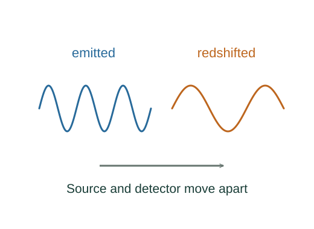

Derive longitudinal and transverse light Doppler shifts
Wave phase is invariant between inertial frames. Its coefficients form a four-vector, so the source-frame angular frequency obeys ω₀ = γ(ω − vkx).
What the symbols mean
β = v/c; f₀,λ₀: source-rest frequency and wavelength; θ: photon direction relative to source velocity in detector frame.
When this applies
Inertial source and detector in vacuum; transverse formula uses a photon arriving perpendicular to source velocity in the detector frame.
Developing the argument

Transform successive wave phases
Wave phase is invariant between inertial frames. Its coefficients form a four-vector, so the source-frame angular frequency obeys ω₀ = γ(ω − vkx).
Choose a receding source
For light travelling opposite the source velocity, cos θ = −1. Then f = f₀/[γ(1 + β)]. The reciprocal frequency ratio is the wavelength ratio.
Take the slow-speed limit
For |β| ≪ 1, expand the square-root ratio to 1 + β at first order. The fractional wavelength shift then approximates the radial speed divided by c.
Choose a transverse arriving ray
Set cos θ = 0 in the frequency transform. The remaining time-dilation factor gives the transverse shift.
A worked example
At recession speed 0.6c, λ/λ₀ = 2. At detector-frame transverse observation, f/f₀ = 0.8.
Derivation behind this calculation ↗A point to keep straight
The angle is frame-dependent. State in which frame the direction is transverse; sound’s medium-based formula is different.
Check the assumptions and derivation ↗